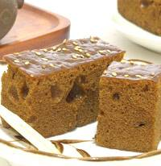
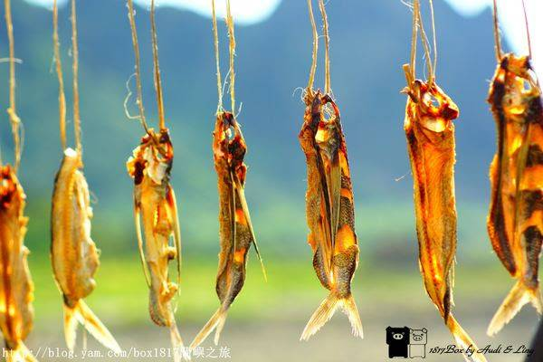
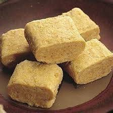

澎湖黑糖糕
澎湖黑糖糕（臺灣話：oo-thn̂g-ké/kué，漢字：烏糖粿），為台灣澎湖縣風味獨特的黑糖製糕點，主要的原料為黑糖、水、低筋麵粉、樹薯粉、泡打粉、小蘇打、白芝麻等，在日治時期由沖繩的琉球粿（沖繩語：アガラサー）加以改良而來，發明人為馬公市糕餅師傅陳克昌。

蘭嶼飛魚乾
飛魚是達悟族人(雅美族 )重要的動物性蛋白質來源之一，捕捉飛魚也變成達悟族 (雅美族) 傳統文化的一部分，每年3-4月飛魚族群會隨著黑潮來到蘭嶼附近海域，一直到6月都是捕捉飛魚的季節，此時達悟族人(雅美族) 就會舉行招飛魚的招魚祭，招魚祭過後即開始捕捉飛魚，把放在船屋裡的拼板舟拉出，整齊的擺放在海邊，此時蘭嶼海岸也被點綴的最漂亮。

金門貢糖
金門貢糖遠近馳名，歷史悠久，金門貢糖的起源有兩種說法，一種是相傳過去金門民眾為了繳交國稅給朝廷，就用當地盛產的落花生加入麥芽糖，以手工敲擊，「摃」捶而成一種香酥可口的特殊的「花生酥」，所以稱為「摃糖」，再交由地方官晉獻給朝廷，竟成為皇室最喜愛的御用珍品。另一種說法則是貢糖在製作過程中必需仰賴人力搥打，以求糖質綿密細緻，閩南人稱之為「摃」。
